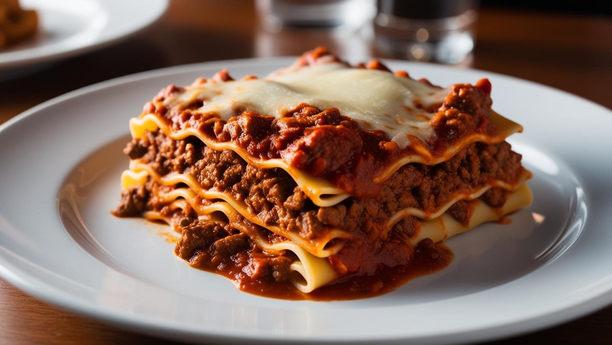

Lasanga Bolognese

Description:
Classic and irresistible, lasagna Bolognese is the perfect combination of layers of pasta, Bolognese sauce made with seasoned ground beef and tomato sauce, interspersed with creamy béchamel sauce and melted cheese. Baked until golden, it delivers a comforting aroma and an unforgettable flavor in every bite.
Perfect for family lunches or special occasions, this recipe brings an explosion of textures and flavors that everyone will love. Serve it with a fresh salad and Italian bread to complete the experience.
Ingredients:
- 500g lasagna noodles
- 400g ground beef
- 2 cups tomato sauce
- 2 tablespoons oil or olive oil
- 1 onion, chopped
- 2 garlic cloves, minced
- 3 cups white sauce
- 300g sliced mozzarella cheese
- 100g grated parmesan cheese
- Salt, pepper, and oregano to taste
Steps:
- Preheat the oven to 180°C (350°F).
- In a pan, heat the oil and sauté the onion and garlic until golden.
- Add the ground beef, season with salt and pepper, and cook until browned.
- Stir in the tomato sauce and let it simmer for 10 minutes. Set aside.
- In a baking dish, spread a thin layer of white sauce at the bottom.
- Layer lasagna noodles, meat sauce, white sauce, and mozzarella cheese. Repeat until the ingredients are used up, finishing with mozzarella and parmesan cheese on top.
- Bake for 30-40 minutes or until the top is golden and bubbly.
- Let it rest for 10 minutes before serving.
Homepage